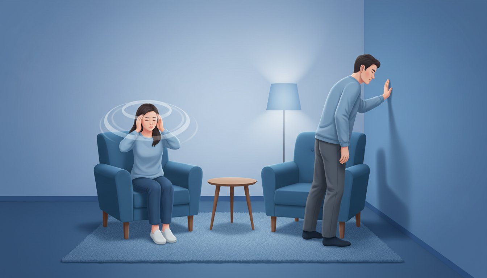

핑 도는 것과 빙빙 도는 것, 느낌과 함께 시작 시점·지속 시간·유발 상황을 확인합니다
핑 도는 것과 빙빙 도는 것, 느낌과 함께 시작 시점·지속 시간·유발 상황을 확인합니다

| 구분 | 빙빙 도는 것 · VERTIGO | |
|---|---|---|
| 느낌 | 일어설 때 핑 돕니다 | 가만히 있어도 빙빙 돕니다 |
| 특징 및 원인 | 앉았다 일어설 때 핑 도는 것은 빈혈·저혈압이 원인인 경우가 많습니다. 나이가 있으신 분들께 특히 흔합니다. | 누웠다 일어나거나 돌아누울 때처럼 머리 위치가 바뀌면 토할 것 같은 느낌이 동반되고 빙빙 도는 경우가 많습니다. |
| 진료과 | 혈압·맥박을 확인하며 내과에서 봅니다. | 이석증 같은 귀 문제가 원인인 경우가 많아 이비인후과에서 봅니다. 가끔 뇌가 원인이면 신경과에서 진료합니다. |
이석증은 재발을 잘 합니다
| 이석증(BPPV) · 재발 주의 | |
|---|---|
| 진단 방법 | 이석증은 진찰 중 머리 위치를 바꾸어 증상과 눈 움직임을 확인해 진단합니다. |
| 생활 주의 | 재발을 잘 하는 병이라, 좋아진 뒤에도 한동안 고개를 휙 돌리지 않는 것이 좋습니다. |
| 약물 안내 | 어지럼약은 이석증을 고치는 약이 아니며, 자세 치료를 대신하지 못합니다. |
| 재발 대처 | 비슷한 어지럼이 다시 생기면 다시 진료받아 이석증 재발인지 확인하고, 결과에 맞는 치료를 받으세요. |
이런 경우엔 바로 응급실로
SPEECH
말이 어눌할 때
말이 어눌하거나 말이 잘 나오지 않을 때
WEAKNESS
한쪽 힘이 빠질 때
얼굴·팔·다리 한쪽에 힘이 빠지거나 저릴 때
VISION
시야에 이상이 있을 때
사물이 두 개로 보이거나 한쪽 시야가 안 보일 때
BALANCE
침대에서 못 내려올 정도
어지러워서 앉거나 서기 어려울 만큼 심할 때